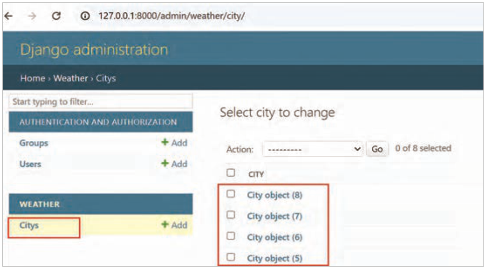
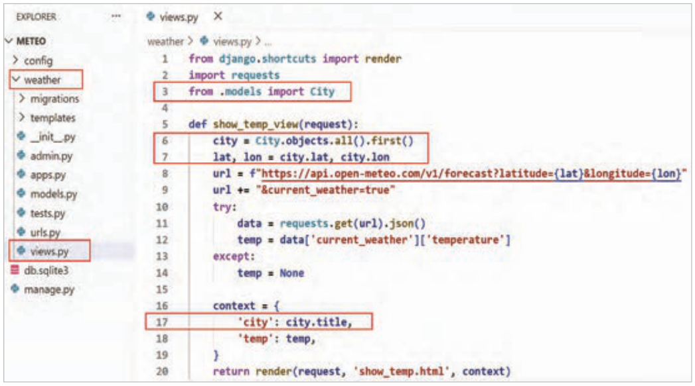
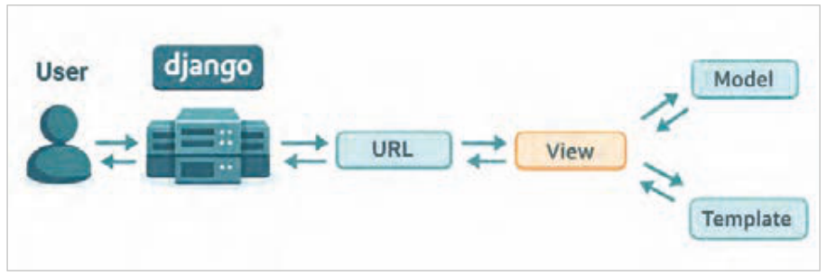
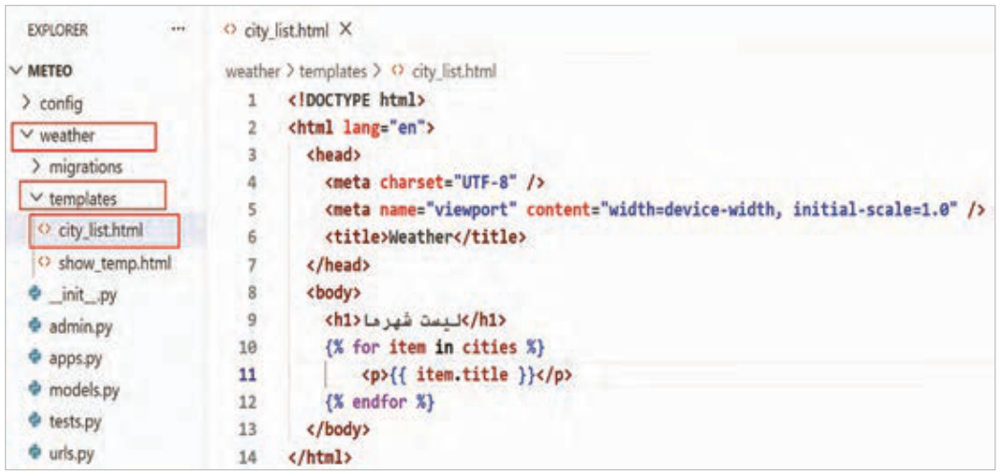
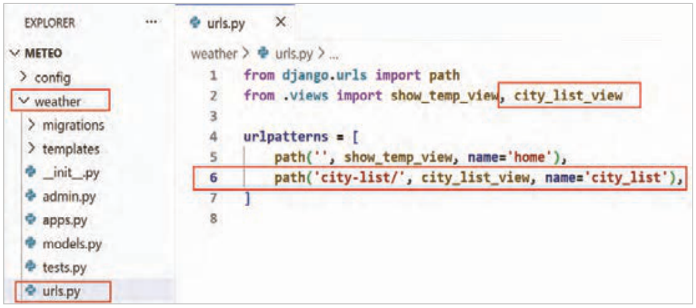
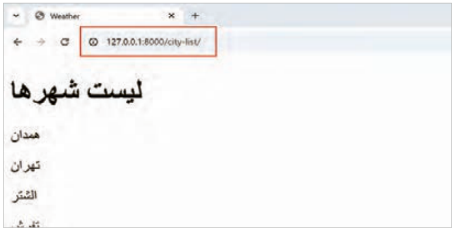
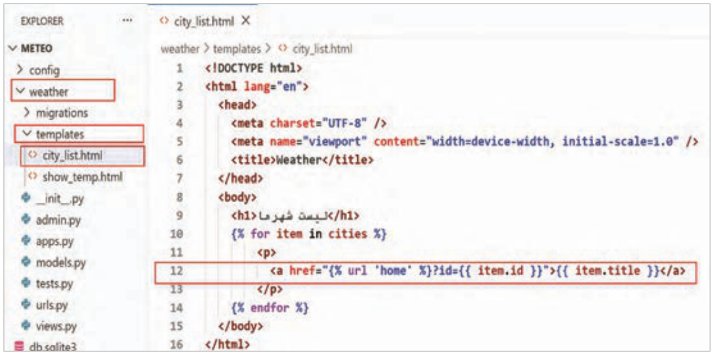

پس از ثبت شهرها، با کلیک روی Citys، لیست شهرهای ثبت شده نمایش داده میشود (شکل 43).

شکل ۴۳: لیست شهرهای ثبت شده
در شکل 43 از City object برای نمایش عنوان هر شهر استفاده شده است. جهت نمایش مناسب عنوان شهرها، فایل models.py را باز کنید و تغییراتی همانند شکل 44 برای مدل City اعمال کنید و فایل را ذخیره کنید.
شکل ۴۴: افزودن متد str به مدل شهر
صفحه ۳۰۶
اگر پنل ادمین را refresh کنید، نتیجه بهصورت شکل 45 خواهد بود.
شکل ۴۵: نمایش مناسب عنوان شهرها در پنل ادمین
آشنایی با ابزار ORM جنگو
اکنون که چند رکورد حاوی نام چند شهر و مختصاتشان را به جدول شهرها اضافه کردید، میتوانید از داخل فایل views.py یکی از رکوردها (مثلاً اولین رکورد) را بخوانید، وضعیت آب و هوای آن شهر را بهدست آوردید و جهت نمایش به فایل index.html ارسال کنید.
برای اینکار لازم است ابتدا ابزار ORM جنگو را بشناسید.
برای کار با پایگاه داده از زبان SQL استفاده میشود، مثلاً دستور SELECT یکی از دستورات اصلی زبان SQL است.
صفحه ۳۰۷
با دستور SELECT بهصورت زیر میتوانید، همه شهرهای جدول City را از پایگاه داده دریافت کنید:
SELECT id, title, lat, lon FROM weather_city اما در جنگو یک ابزار مفید با نام ORM وجود دارد که کار با پایگاه داده را راحتتر میکند. ORM مثل یک مترجم است. عملیات مربوط به ارتباط با پایگاه داده را با زبان پایتون دریافت و در پشت صحنه، به دستورات SQL ترجمه میکند.
بهعنوان مثال دستور معادل پرس و جوی قبلی در ORM جنگو بهصورت زیر است:
City.objects.all()
در این کد پایتونی، City نام مدل است.
اکنون کد show_temp_view را با استفاده از ORM جنگو همانند شکل 46 تغییر دهید.

شکل ۴۶: استفاده از ORM جنگو
توضیحات کدها:
خط 3: مدل City از models.py در این فایل import شده است.
خط 6: با استفاده از ORM جنگو، اولین شهر ذخیره شده در جدول شهر، در متغیر city ذخیره شده است.
خط 7: مقدار lat و lon از شهرِ واکشی شده از جدول، دریافت و در متغیرهای lat و lon ذخیره شده است.
خط 17: نام شهر نیز از پایگاه داده دریافت شده و درون دیکشنری context ذخیره شده است.
فایل را ذخیره و صفحه اصلی سایت را باز کنید. دمای شهر همدان نمایش داده میشود.
صفحه ۳۰۸
نمایش لیست شهرها
تا اینجا توانستید چند شهر را ذخیرهسازی کنید. قرار است که این شهرها را از پایگاه داده بخوانید و درون سایت بهصورت یک لیست نمایش دهید تا کاربر بتواند با کلیک بر روی شهر دلخواهش، وضعیت دمای آن شهر را مشاهده کند.
اینکار به کمک view و template صورت خواهد گرفت.
در جنگو، view میتواند اطلاعات را از دیتابیس دریافت کرده و سند html را جهت نمایش به کاربر آماده کند. شکل 47 را مشاهده کنید، request از url به view ارسال شده و view با استفاده از model و template، اطلاعات را جهت نمایش به کاربر آماده میکند.

شکل ۴۷: دریافت اطلاعات از مدل توسط View
جهت نمایش لیست شهرها در صفحه اصلی سایت میتوانید چهار مرحله را بهصورت زیر انجام دهید:
ساختن یک تابع با نام city_list_view در Views.py
ساختن یک template با نام city_list.html
تغییر و تنظیم فایلurls.py
قرار دادن لینک «لیست شهرها» در صفحه اصلی
مرحله اول: یک view با نام city_list_view همانند شکل 48 ایجاد کنید.
شکل ۴۸: افزودن city_list_view
صفحه ۳۰۹
توضیحات کدها:
خط 6: با استفاده از ORM جنگو یک Query اجرا شده و لیست همه شهرها از جدول City واکشی شده است. ORM جنگو دستورات مختص به خود را دارد و این دستورات به کدهای SQL تبدیل شده و توسط پایگاه داده اجرا میشوند. سپس نتیجه دستور در متغیری با نام cities ذخیره شده است.
خط 8: دیکشنری context برای city_list.html ارسال شده است، مقدار value این دیکشنری یعنی cities در خط 6 مقداردهی شده است.
مرحله دوم: اکنون یک فایل html با نام city_list.html درون پوشه templates ایجاد کنید، کد این فایل را همانند شکل 49 وارد کنید.

شکل ۴۹: افزودن city_list.html
توضیحات کدها:
خط 10: یک حلقه روی cities اجرا شده است تا لیست شهرها را بهصورت تگ p در مرورگر نمایش دهد. cities قبلاً در فایل views.py درون یک دیکشنری تعریف شده است.
خط 11: با استفاده از {{ }} میتوانید به فیلدهای هر item دسترسی داشته باشید. title فیلدی است که برای عنوان شهر، در مدل City تعریف کردید.
خط 12: حتماً باید حلقه for را با endfor خاتمه دهید، در غیر اینصورت در مرورگر با خطا مواجه خواهید شد.
صفحه ۳۱۰
مرحله سوم: فایل urls.py در weather app را همانند شکل 50 تغییر دهید.

شکل ۵۰: افزودن path لیست شهرها به urls.py
توضیحات کدها:
خط 6: یک path جدید جهت استفاده از city_list_view اضافه شده و به این معنی است که لیست شهرها در آدرس /listـ http://127.0.0.1:8000/city نمایش داده میشود.
مرحله چهارم: کد show_temp.html را جهت اضافه کردن لینک به صفحه لیست شهرها، همانند شکل 51 تغییر دهید.
شکل ۵۱: اضافه کردن لینک به لیست شهرها
صفحه ۳۱۱
توضیحات کدها:
خط 15: در این خط تگ a اضافه شده و مقدار href آن برابر عبارت }% url 'city_list' %{ است.
در این عبارت }% url 'city_list' %{ یک Template Tag است. از تگ url استفاده شده است و city_list آرگومان آن است. این خط با استفاده از نام مسیر city_list، آدرس لینک لیست شهرها را به صورت خودکار تولید میکند (شکل 52).
شکل ۵۲: روند کار تگ url در جنگو
اکنون فایل را ذخیره کرده و صفحه اصلی سایت را refresh کنید، لینک اضافه شده را همانند شکل 53 مشاهده خواهید کرد.
شکل ۵۳: نمایش لینک لیست شهرها
صفحه ۳۱۲
اکنون روی لینک اِضافه شده (لیست شهرها) کلیک کنید، همانند شکل 54، لیست شهرها را مشاهده خواهید کرد.

شکل ۵۴: نمایش لیست شهرها
نمایش دمای شهر انتخاب شده توسط کاربر
شهرهایی که در لیست شهرها نمایش داده میشوند، قابلیت کلیک ندارند، لازم است تغییراتی اعمال کنید تا کاربر امکان کلیک کردن روی شهر مورد نظر خود را داشته باشد، تا دمای شهر انتخاب شده، نمایش داده شود.
ابتدا فایل city_list.html را باز کرده و همانند شکل 55، تغییرات مورد نظر را اعمال کنید.

شکل ۵۵: افزودن لینک به هر شهر
Page 305
After the cities are registered, by clicking on Citys the list of registered cities is shown (Figure 43).
Figure 43: The list of registered cities
In Figure 43, City object is used to show the title of each city. To show the titles of the cities suitably, open the file models.py, make changes like Figure 44 for the model City and save the file.
Figure 44: Adding the str method to the city model
Page 306
If you refresh the admin panel, the result will be as in Figure 45.
Figure 45: Suitable display of the titles of the cities in the admin panel
Getting to know Django's ORM tool
Now that you have added several records containing the names of some cities and their coordinates to the table of cities, you can read one of the records (for example the first record) from inside the file views.py, get the weather of that city and send it to the file index.html for display.
For this you first need to know Django's ORM tool.
To work with the database the SQL language is used; for example the SELECT statement is one of the main statements of the SQL language.
Page 307
With the SELECT statement you can get all the cities of the table City from the database as follows:
SELECT id, title, lat, lon FROM weather_city But in Django there is a useful tool named ORM that makes working with the database easier. ORM is like a translator. It receives the operations related to communicating with the database in the Python language and, behind the scenes, translates them into SQL statements.
For example the statement equivalent to the previous query in Django's ORM is as follows:
City.objects.all()
In this Python code, City is the name of the model.
Now change the code of show_temp_view using Django's ORM as in Figure 46.
Figure 46: Using Django's ORM
Explanation of the code:
Line 3: the model City is imported from models.py in this file.
Line 6: using Django's ORM, the first city saved in the table of cities is stored in the variable city.
Line 7: the values lat and lon are taken from the city fetched from the table and stored in the variables lat and lon.
Line 17: the name of the city is also taken from the database and stored in the dictionary context.
Save the file and open the main page of the site. The temperature of the city of Hamedan is shown.
Page 308
Showing the list of cities
So far you were able to save some cities. These cities are to be read from the database and shown inside the site as a list so that the user, by clicking on the city they like, can see the temperature of that city.
This will be done with the help of a view and a template.
In Django, a view can get information from the database and prepare the html document for showing it to the user. Look at Figure 47: the request is sent from the url to the view and the view, using the model and the template, prepares the information for display to the user.
Figure 47: Getting information from the model by the View
To show the list of cities on the main page of the site you can do four steps as follows:
Making a function named city_list_view in Views.py
Making a template named city_list.html
Changing and setting the file urls.py
Putting the link "List of cities" on the main page
First step: create a view named city_list_view as in Figure 48.
Figure 48: Adding city_list_view
Page 309
Explanation of the code:
Line 6: using Django's ORM a Query is run and the list of all the cities is fetched from the table City. Django's ORM has its own statements, and these statements are turned into SQL code and run by the database. Then the result of the statement is stored in a variable named cities.
Line 8: the dictionary context is sent for city_list.html; the value of this dictionary, that is cities, was given its value in line 6.
Second step: now create an html file named city_list.html inside the templates folder and enter the code of this file as in Figure 49.
Figure 49: Adding city_list.html
Explanation of the code:
Line 10: a loop is run over cities to show the list of cities as p tags in the browser. cities was defined earlier in the file views.py inside a dictionary.
Line 11: using {{ }} you can reach the fields of each item. title is the field you defined in the model City for the title of the city.
Line 12: you must end the for loop with endfor; otherwise you will meet an error in the browser.
Page 310
Third step: change the file urls.py in the weather app as in Figure 50.
Figure 50: Adding the city list path to urls.py
Explanation of the code:
Line 6: a new path is added to use city_list_view, and it means that the list of cities is shown at the address http://127.0.0.1:8000/city/list.
Fourth step: change the code of show_temp.html to add a link to the page of the list of cities, as in Figure 51.
Figure 51: Adding a link to the list of cities
Page 311
Explanation of the code:
Line 15: in this line the a tag is added and its href value equals the expression {% url 'city_list' %}.
The expression {% url 'city_list' %} is a Template Tag. The url tag is used and city_list is its argument. This line, using the name of the path city_list, automatically makes the address of the link to the list of cities (Figure 52).
Figure 52: How the url tag works in Django
Now save the file and refresh the main page of the site; you will see the added link as in Figure 53.
Figure 53: Showing the link to the list of cities
Page 312
Now click on the added link (the list of cities); as in Figure 54, you will see the list of cities.
Figure 54: Showing the list of cities
Showing the temperature of the city chosen by the user
The cities shown in the list of cities cannot be clicked; you must make changes so that the user can click on the city they want, so that the temperature of the chosen city is shown.
First open the file city_list.html and make the wanted changes as in Figure 55.


 شکل ۴۸: افزودن
شکل ۴۸: افزودن